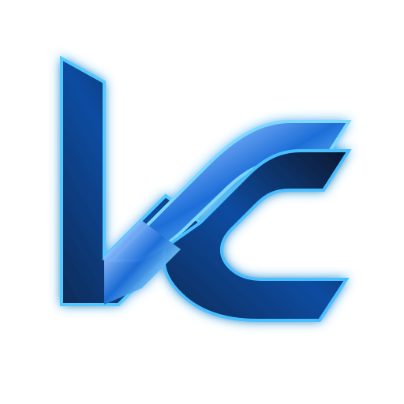

01
HorusGym
Plataforma integral para gimnasios: web, mobile, API, pagos, rutinas y operación.
Explorar caso ↗
Lucas CipollaAPPLIED SYSTEMS & AISOFTWARE / IA / AUTOMATIZACIÓN / INFRAESTRUCTURA
Diseño, desarrollo e implemento productos y plataformas que combinan software, IA, automatización e infraestructura para resolver problemas concretos.
PROYECTOS DESTACADOS
No muestro ejercicios de portfolio: muestro productos, integraciones y plataformas construidas para usarse.
Plataforma integral para gimnasios: web, mobile, API, pagos, rutinas y operación.
Explorar caso ↗CRM conversacional con agentes, RAG, workflows, WhatsApp, Chatwoot, n8n y modelos locales.
Ver arquitectura →Sistema de gestión de causas, vencimientos y automatizaciones para operación jurídica.
Explorar caso →CÓMO TRABAJO
Mi diferencial está en conectar producto, desarrollo, IA e infraestructura, y llevar esa visión hasta un sistema operativo y medible.
CAPACIDADES
Aplicaciones web y mobile, APIs, UX orientada a operación y producto digital.
Agents, RAG, evaluación, modelos locales, prompts y automatización inteligente.
Workflows, integraciones, WhatsApp, n8n, APIs y procesos conectados.
Docker, CI/CD, observabilidad, networking, despliegue y operación.
SOBRE MÍ
Me interesa entender el problema, construir una solución coherente y verla funcionando en producción. Mi recorrido mezcla software engineering, producto, automatización, infraestructura e inteligencia artificial aplicada.
Conversemos ↗